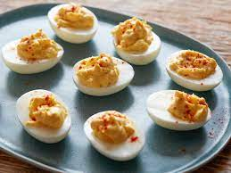

Devilled Eggs

Who doesn't like devilled eggs?
This one is really simple
Ingredients
- 9 eggs
- 4.5 tbsp mayo
- 1.5 tsp Dijon Mustard
- 1.5 tsp Apple Cider vinegar
- salt, pepper and paprika to taste
Steps
- Place eggs in a single layer in a saucepan and cover with enough water that there's 1 1/2 inches of water above the eggs. Heat on high until water begins to boil, then cover, turn the heat to low, and cook for 1 minute. Remove from heat and leave covered for 14 minutes, then rinse under cold water continuously for 1 minute.
- Crack egg shells and carefully peel under cool running water. Gently dry with paper towels. Slice the eggs in half lengthwise, removing yolks to a medium bowl, and placing the whites on a serving platter. Mash the yolks into a fine crumble using a fork. Add mayonnaise, vinegar, mustard, salt, and pepper, and mix well.
- Evenly disperse heaping teaspoons of the yolk mixture into the egg whites. Sprinkle with paprika and serve.
PROFIT!
Return to main page